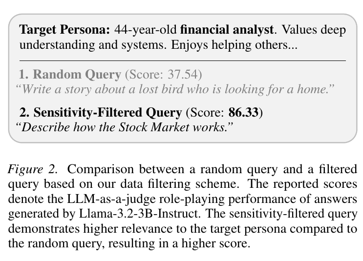
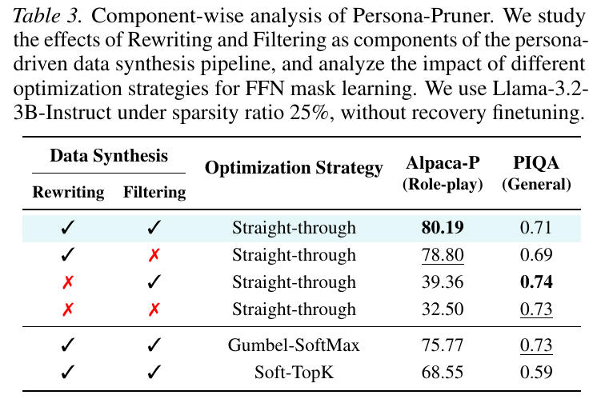
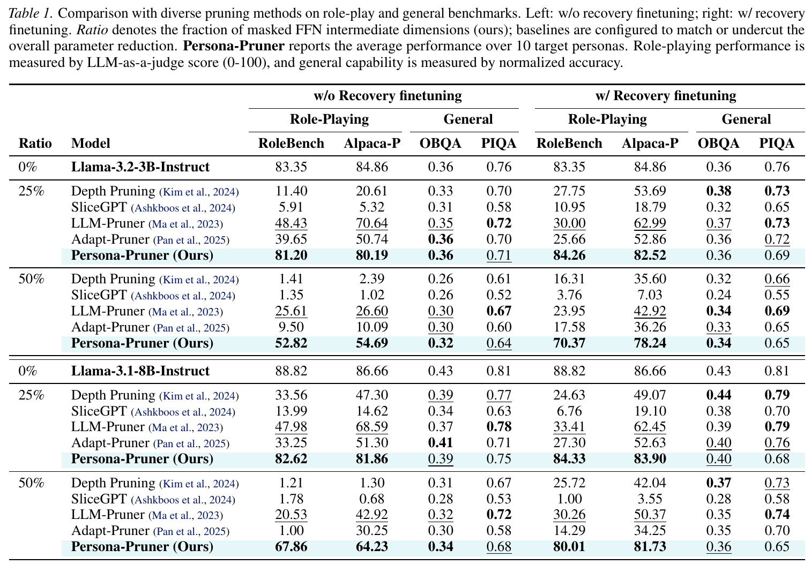
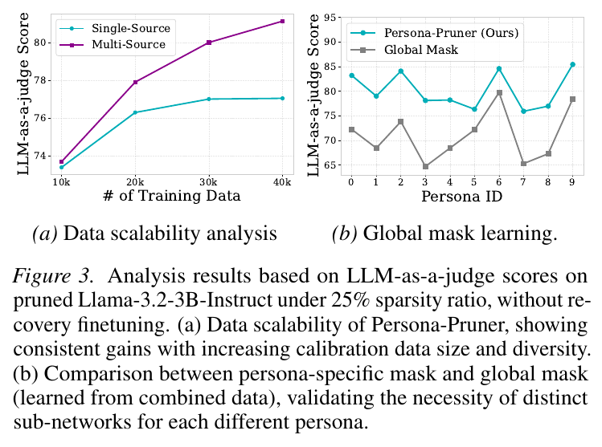
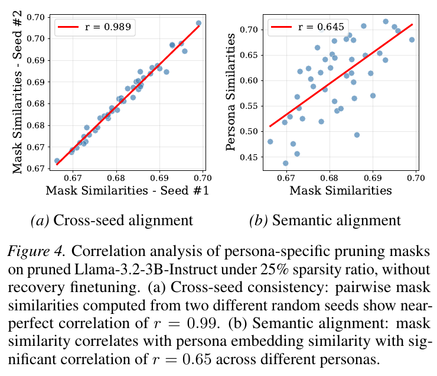
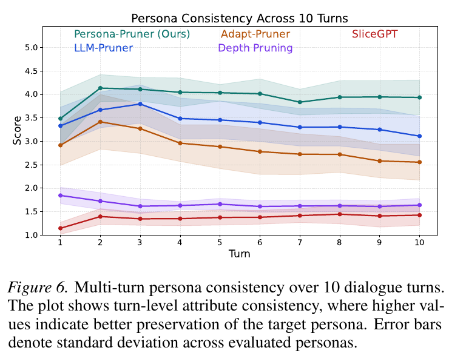
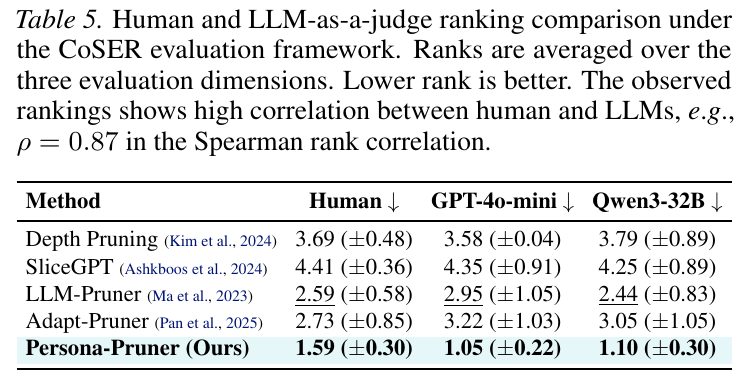
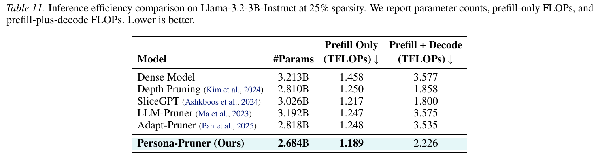

Persona description
No ground-truth role-playing corpus is required for a new target persona.
Motivation
Persona-Pruner asks whether a character identity really needs the entire capacity of a generalist LLM. The answer: a compact, persona-aligned sub-network can preserve role-playing behavior far better than generic pruning.
No ground-truth role-playing corpus is required for a new target persona.
Structured intermediate-dimension pruning keeps the result deployable.
Maximum reduction in dense-model performance drop over the strongest RoleBench baseline.
Main role-playing results average over ten target personas.
Method
Persona-Pruner starts from only a natural-language persona description, synthesizes persona-aligned calibration data, and sculpts a compact sub-network that keeps the target identity.
Persona-sensitive queries are selected by representation-level divergence from reference personas. A strong LLM then rewrites answers in the target persona voice while preserving semantics.

Original weights stay frozen while trainable mask scores select top-k FFN intermediate dimensions with a straight-through estimator, yielding a structurally pruned role-playing model.

Results
Persona-Pruner is evaluated against diverse LLM pruning baselines on RoleBench, Alpaca-P, OpenBookQA, and PIQA across Llama 3B and 8B backbones.

At 25% sparsity on Llama-3.2-3B-Instruct, Persona-Pruner retains 81.20 RoleBench score versus 48.43 for the strongest baseline.
With recovery finetuning, the 3B model reaches 84.26 on RoleBench at 25% sparsity, slightly above the dense score.
The pruned models keep comparable OpenBookQA and PIQA scores, indicating that persona preservation does not require a broad capability collapse.
Analysis
Learned masks are reproducible across seeds, align with semantic persona similarity, outperform a global shared mask, and maintain multi-turn consistency.
More persona-calibration data improves performance, and per-persona masks beat a single mask trained over all personas.

Pairwise mask similarities are highly reproducible across seeds and correlate with persona embedding similarity.

Over 10-turn conversations, Persona-Pruner maintains stronger attribute consistency than baseline pruning methods.

Human ranking aligns with LLM judge rankings, supporting automated evaluation as a practical proxy in this setup.

Structured FFN pruning reduces parameter count and FLOPs while keeping the model compatible with standard dense inference.

Citation
Persona-Pruner appears at ICML 2026. The code release includes pruning, data construction, and evaluation scripts.
@inproceedings{kim2026personapruner,
title = {Persona-Pruner: Sculpting Lightweight Models for Role-Playing},
author = {Kim, Jinsu and Tack, Jihoon and Lee, Noah and Jeong, Jongheon},
booktitle = {Forty-third International Conference on Machine Learning},
year = {2026},
}